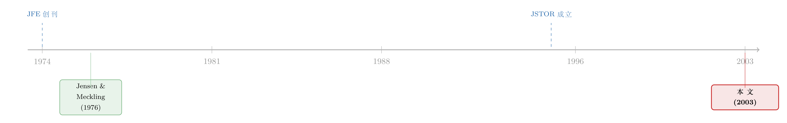

一页夹在顶刊里的广告：当尘封的「过刊」第一次被标上价格
本文读的不是一篇论文，而是 2003 年《Journal of Financial Economics》里的一则整版广告——「Backfiles：Economics and Business」（经济与商业过刊数字化合集）。它没有摘要、没有系数、没有识别策略，却恰好坐在一条历史的转折线上：那一年前后，一整个学科的「记忆」第一次被扫描进数据库、被标上价格、被允许检索。这页广告本身，就是这场变革的一份证物。
1 引言：翻到一页不该出现的东西
设想你正在翻 2003 年那一卷的 JFE。前一页还是某篇关于资本结构、或者期权定价的正文，公式密密麻麻；你顺手翻过去，期待下一篇论文的标题。
可你看到的，是一则广告。
标题写着「Backfiles: Economics and Business」。再往下，是出版商在推销一件商品——把经济学与商科期刊几十年的过刊（backfiles）整体数字化，扫描、编目、上线，打包卖给图书馆。没有作者，没有研究问题，没有数据。严格地说，它根本不是一篇「论文」，它是被装订进顶刊里的一张价签。
这就有点尴尬了。我们的整套训练，是用来「读论文」的：找识别策略、抠系数、挑robustness的毛病。可面对这样一页东西，这套工具全部失灵。
但换个角度——一则广告之所以会出现在某个时间、某本刊物上，本身就是一个信号。它告诉你：在 2003 年，有人判断「把旧论文重新卖一遍」是一门划算的生意。而这个判断之所以成立，背后藏着一场我们今天已经习以为常、却很少回头审视的变革。
所以，本文不打算假装它是一篇有数据的论文去「评述」。我想做的，是把这页广告当成一面镜子，照一照它折射出的那个问题：一篇学术论文，在「变旧」之后，到底还值多少钱？
（顺带一提，把期刊里那些「非论文」的边角料——目录、勘误、主编寄语、涨价通知——拿来当研究对象读，其实是这个博客的一个小传统，可参见《卷末那一页：从一份「索引」里，读出 2003 年的金融学在想什么》与《一封涨价通知里的微观经济学：当一本顶刊开始给「投稿」定价》。这页广告，恰好又是同一卷里的另一个标本。）
2 「过刊」是什么，为什么它会变成一门生意
先把名词说清楚。过刊（backfiles），直译就是「往期的文件」，指一本期刊在某个数字平台上线之前所积累的全部历史卷期。比如一家平台 1998 年才把当期论文搬到网上，那么 1974 到 1997 年的全部旧文，就是它的 backfiles。
在纸本时代，这些旧文住在哪里？住在图书馆地下室一排排装订合订本（bound volumes）里。想读 1976 年那篇文章，你得知道卷号、期号、起始页码，走到书架前，把厚厚一本搬下来，复印，再放回去。一篇论文一旦「变旧」，它在物理上就沉了下去——不是被反驳，而是被埋葬在借阅成本里。
这里有一个容易被忽略的事实：知识在「逻辑上」会累积，但在「可及性（accessibility）」上未必。一篇 1976 年的经典，和一篇 1976 年的平庸之作，在合订本的书架上是等距离的——都一样难找。数字化做的第一件事，就是把这个距离一下子拉到了零。
于是出版商发现了一件事：自己手里这堆「旧库存」，其实是一笔沉睡的资产。这和唱片公司的逻辑一模一样——一首老歌的母带，重新混音、上线流媒体，就能再卖一轮。学术过刊也是如此：内容早就生产完了，边际复制成本几乎为零，只要扫描、编目、挂上检索系统，就能向全世界的图书馆收一笔订阅费。
这页「Backfiles: Economics and Business」的广告，卖的正是这门生意：把经济与商科领域几十年的旧刊，打包成一个可检索的合集。它面向的买家不是读者个人，而是机构图书馆——典型的双边结构里「付钱的那一边」。
接着，一个自然的问题是：这门生意，为什么偏偏在 2003 年前后做得起来？
3 转折点：一个学科的记忆，是怎么搬上网的
答案藏在 1990 年代末到 2000 年代初那一段基础设施的爆发里。
首先，是检索层。1995 年，由梅隆基金会资助的 JSTOR 成立，第一次系统性地把人文社科期刊的完整历史扫描上线——它做的就是 backfiles，而且一开始就把「老」当成卖点。紧接着，大型商业出版商在 1990 年代末推出了自己的全文平台（如 ScienceDirect），把当期论文电子化。
然后，一个缺口暴露出来：新平台只有「当期」和「近几年」，而几十年的旧文还躺在纸里。读者在屏幕上检索，却频频撞到一句「此文未数字化」。这个缺口，就是 backfiles 产品的市场。
但真正关键的一步在于——它改变的不只是「找文献方便了」，而是研究本身的做法。
在纸本时代，文献综述是有「半径」的：你引用的，大概率是你手边能拿到的东西。地理、馆藏、语言，都是过滤器。数字化把这个半径推向无穷，结果是引用网络的形状被悄悄改写：极少数经典被反复检索、引用愈发集中（「长尾」的头部更尖了），而过去那些「沉在地下室」的冷门旧文，第一次有机会被一次关键词搜索重新打捞上来。
于是反转出现了：这页广告表面上在卖「access（可及性）」，但它真正在贩卖的，是学科记忆的重组。2003 年，恰好坐在这条曲线最陡的一段——往前几年，旧文还普遍不可检索；往后几年，「在书架上找论文」这件事就基本绝迹了。一个研究者从此默认：只要它存在，我就能在十秒内调出来。 这是一个静悄悄、却彻底的认知方式的迁移。
而最妙的反讽是：这页推销旧刊的广告，自己如今也成了一份旧刊——它被扫描、被收录、被你我此刻在屏幕上读到。它推销的那场数字化，最终把它自己也吞了进去。卖「过刊」的那一页，自己变成了过刊。
4 文献脉络：把这页广告放回它的坐标系
这页广告没有参考文献，但它落在一条清晰的时间线上。让我们沿着「学术记忆数字化」这条线，把它放回坐标系里。
早期的锚点，是期刊本身的诞生：JFE 创刊于 1974 年，它要装的，正是后来需要被「数字化」的那批内容。两年后，Jensen 与 Meckling（1976）那篇关于代理成本与资本结构的论文发表在 JFE 上——它是「老论文为何永远不会真正变旧」的最佳例证：半个世纪后人们还在逐字重读它（见《债务这副药，为什么不能全吃？——重读 Jensen 和 Meckling 五十年》）。正是这种「经典永不退场」的特性，让 backfiles 在商业上站得住脚——你卖的不是废纸，是会一直被引用的资产。
接着，1995 年 JSTOR 给出了「把完整历史扫上网」的范式；1990 年代末，商业全文平台把当期论文电子化，留下了过刊这道缺口。2003 年，这页广告，就是有人要来填这道缺口的市场信号。

如果说这条脉络有什么「这篇论文所处的位置」，那就是：它不是脉络里的一个理论贡献，而是脉络里的一个化石层——一层薄薄的、记录了「数字化正在发生」的沉积。读它的价值，不在于它说了什么，而在于它出现本身所标记的那个时刻。
（这个博客里还有几篇同属「读期刊边角料」的姊妹篇，处理的都是这类「非论文」的证物：《八行标题：一张目录，如何画下 2003 年公司治理的全景》、《页码消失的那一天：JFE 给每篇文章发了一个「身份证」》、《七百一十七页上的一段话：一篇没有数据的 RFS「论文」》。它们和本文一样，都在追问同一件事：期刊这台机器，除了论文，还在悄悄告诉我们什么。）
5 评论与延伸（Q&A + 研究方向）
(a) 几个可能的疑问
Q：把一则广告当「论文」来评，是不是太牵强了？
牵强的是「评述」，不牵强的是「阅读」。广告不是研究，但它是数据点——一个出版商在特定年份、特定刊物上投放特定产品的决策。把它当作一份关于「2003 年学术数字化市场」的证物来读，是完全正当的；唯一要诚实的地方，是别假装它有不存在的系数和识别策略。本文自始至终没有编造任何数字，原因正在于此。
Q：backfiles 和「开放获取（open access）」是一回事吗？
恰恰相反，它们几乎是对立面。开放获取的逻辑是「让论文免费、向所有人开放」；而 backfiles 产品的逻辑是「把历史库存重新商品化，向机构收费」。同一批旧论文，在开放获取的世界里趋向于价格归零，在 backfiles 的世界里却被重新标价。2003 年，是后者占上风的年代；这页广告，是那个商业模式的旁证。
Q：数字化真的改变了研究方式，还是只是「更方便」而已？
「方便」会在临界点上发生质变。当调取一篇旧文的成本从「半小时 + 复印费」降到「十秒 + 零成本」，研究者愿意检索的文献半径会扩大一个数量级，文献综述的形状、引用的集中度、冷门旧文的「复活率」都会随之改变。这不是程度问题，是行为问题——它属于一类经典的「信息摩擦下降如何改变行为」的故事，和市场里「信息扩散变快如何改变价格」在结构上是同构的（参见《市场要多久才「想明白」？——给效率装上一只秒表》）。
Q：为什么是 2003 年，而不是更早或更晚？
因为这一年坐在「检索平台已经普及、但旧刊尚未补全」这道缺口最大的位置。再早几年，连当期论文都还没上网，谈不上补过刊；再晚几年，主要刊物的过刊基本已被各大平台收编，这道缝隙就闭合了。广告投放，瞄准的永远是缺口最宽的那一刻。
Q：本文没有参考文献，是不是「漏」了？
不是漏，是没有。这页广告本身不含任何学术引用，正文里也没有可供提取的文献。按照「只引用真实存在的条目、绝不编造」的原则，本文的参考文献只能列出可被独立核实的少数公共事实（JFE 创刊、Jensen-Meckling 的发表、JSTOR 的成立），而不能为了凑数去虚构一份书目。一篇诚实的短书目，胜过一份漂亮的假书目。
(b) 几个可能的研究问题与提案
1）过刊数字化的「引用复活」效应
【经济故事】当一本期刊的某一段历史卷期被批量数字化、变得可检索，那些原本「沉」在书架上的旧文，引用量会不会出现一个可观测的跳升？如果会，跳升集中在哪些文章——是早已知名的经典，还是被埋没的冷门？这能直接量出「可及性」对知识扩散的因果作用。
【可行性】高。识别策略很干净：不同期刊、不同卷期的数字化上线时间是交错（staggered）的，天然构成一个交错双重差分 (staggered DiD) 设计；以「文章 × 年」为单位，用引用数据（如 Web of Science、Crossref）做被解释变量。唯一要小心的，是近年文献反复强调的交错 DiD 的负权重问题（参见《当「更稳健」的设计悄悄把符号弄反了——重读交错双重差分》），需用稳健估计量。数据可得、设计成熟，doable。
2）数字化与文献综述的「半径」
【经济故事】如果数字化扩大了研究者愿意检索的文献半径，那么一篇新论文的参考文献，应该在「时间纵深」和「来源广度」上随数字化普及而系统性变化——引用更老的文献、引用更冷门的刊物。这是「信息摩擦下降改变行为」的一个直接可测版本。
【可行性】中。被解释变量（每篇论文参考文献的年龄分布、来源 Herfindahl）可从全文文献库构造，但「某作者在某时点能否检索到某文献」这一处理变量难以精确测量，更多只能用平台覆盖率做代理，识别偏向相关而非因果。适合作描述性 + 准实验的混合证据。
3）出版商「过刊定价」的两边市场结构
【经济故事】backfiles 是典型的双边/平台定价问题：内容的边际复制成本近乎为零，定价几乎全由图书馆一侧的支付意愿和议价能力决定。不同学科、不同声望的过刊合集，溢价差异有多大？声望（被引强度）能解释多少定价？这是一道把「学术资本」翻译成「价格」的题。
【可行性】中低。机制清晰、故事好讲，但数据是瓶颈——图书馆与出版商之间的过刊采购合同价格普遍保密，公开样本稀少且选择性强。除非能拿到某个大学系统的采购档案，否则只能做小样本或问卷，结论的外推性有限。诚实地说，识别上偏弱。
6 我的判断
先说清楚它不是什么：它不是一项研究，没有贡献可言，谈「识别担忧」更是无的放矢。把它硬抬成一篇论文去评，是不诚实的。
但作为一份证物，它有一种朴素的价值。它精确地标记了一个时刻——2003 年前后，金融与经济学这门学科的「记忆」正在从书架搬进数据库。我们今天默认「任何论文都能十秒调出」，以至于忘了这件事曾经需要被推销、需要被付费购买、需要有人判断它划算才会发生。这页广告，就是那个「曾经」的快照。
如果说有什么遗憾，是它太沉默了：它只告诉我们「这门生意在 2003 年成立了」，却不告诉我们它改变了什么。而那个「改变了什么」——引用的复活、文献半径的扩张、知识扩散速度的变化——才是真正值得做的实证。这页广告提出了问题，答案得我们自己去数据里找。
我接下来最想看到的，是上面第一个提案：用交错数字化的时点，干净地量一次「可及性」对一篇旧论文命运的因果作用。如果证据成立，那将是对这页广告最好的回应——它当年卖的「access」，到底为这门学科买回了什么。
参考文献
说明：本条目为期刊广告，自身不含学术引用，正文亦无可提取的文献。下列仅为正文中提及、且可独立核实的公共事实性条目，未作任何虚构。
- Journal of Financial Economics (founded 1974). Elsevier. （本广告所在期刊；创刊年份。）
- Jensen, M. C., & Meckling, W. H. (1976). Theory of the Firm: Managerial Behavior, Agency Costs and Ownership Structure. Journal of Financial Economics 3(4), 305–360.
- Advert: Backfiles — Economics and Business (2003). Journal of Financial Economics. （本文评述的对象本身。）